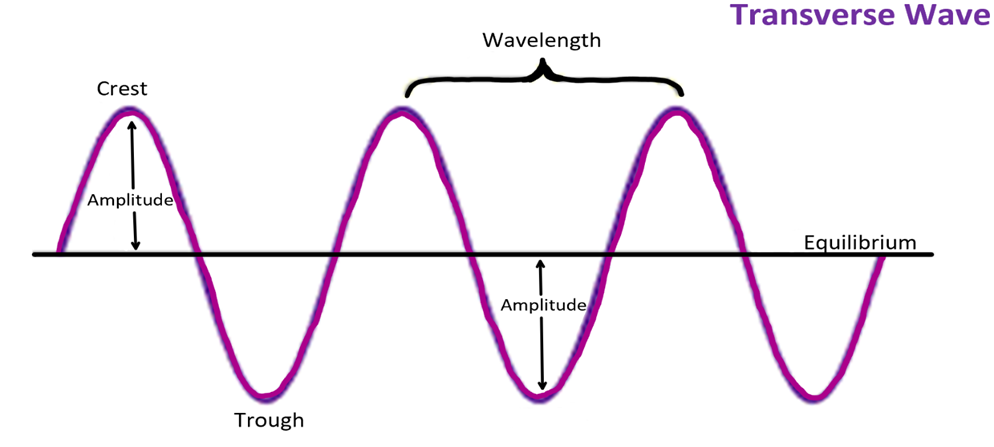
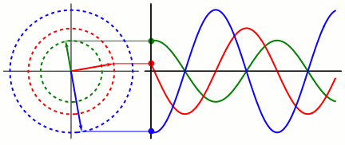
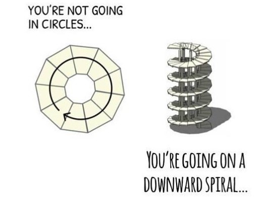
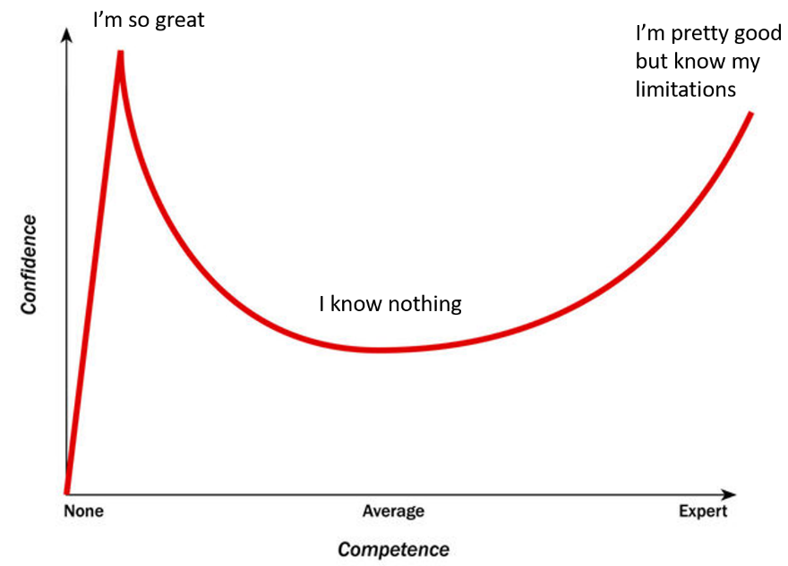
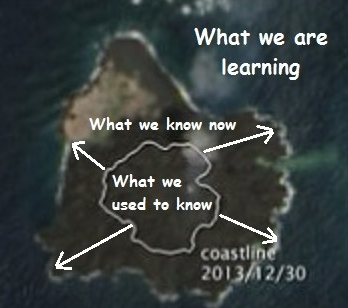
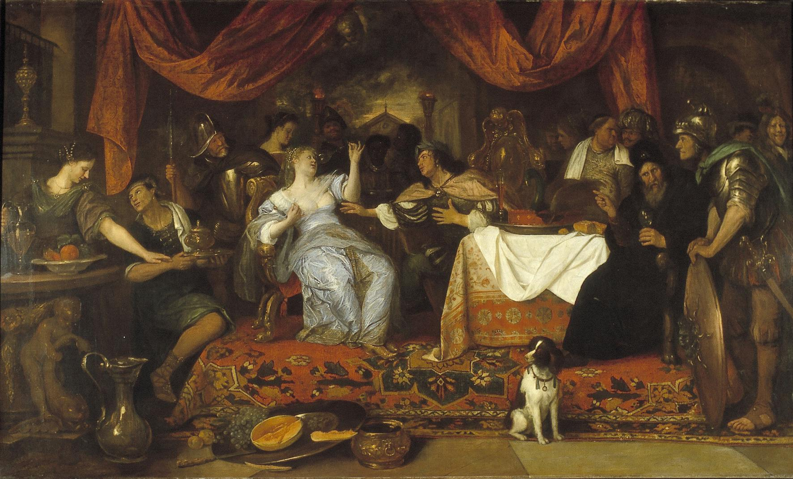
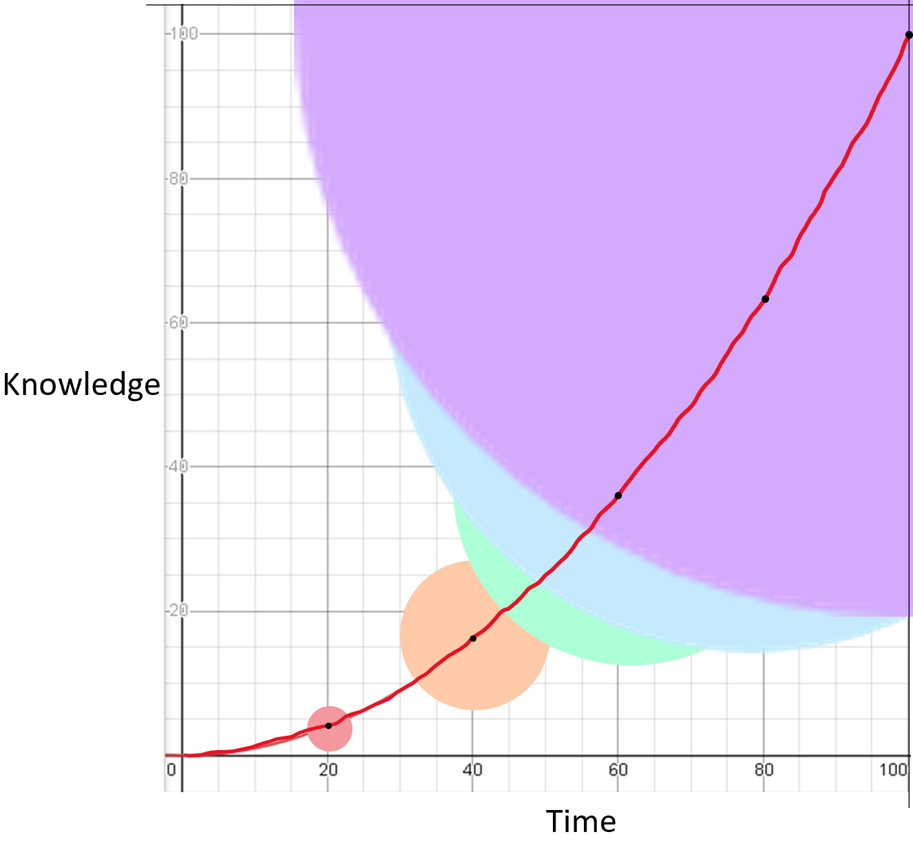
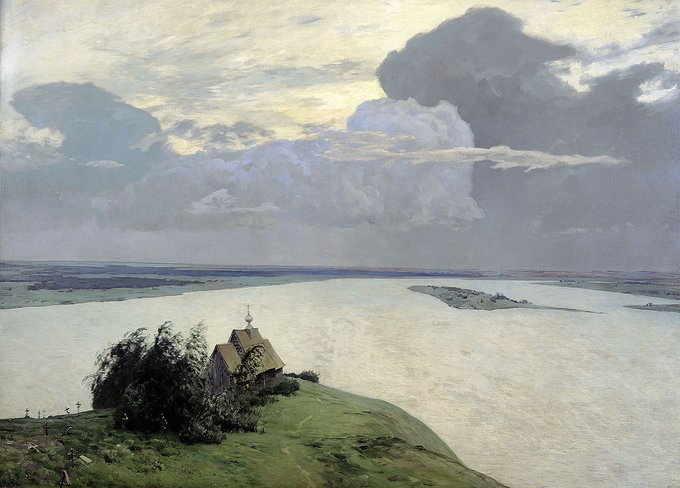
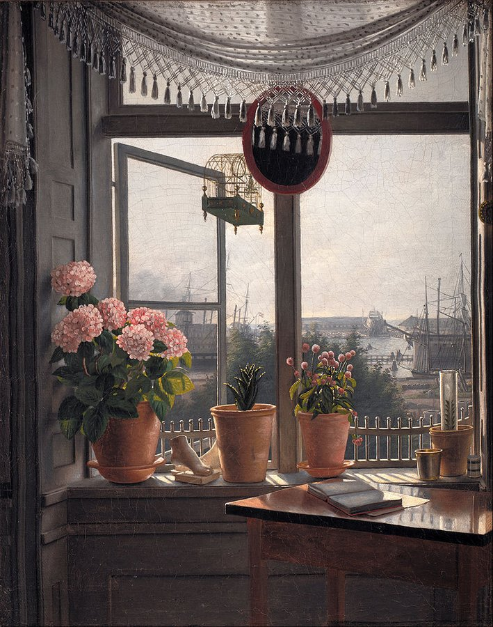
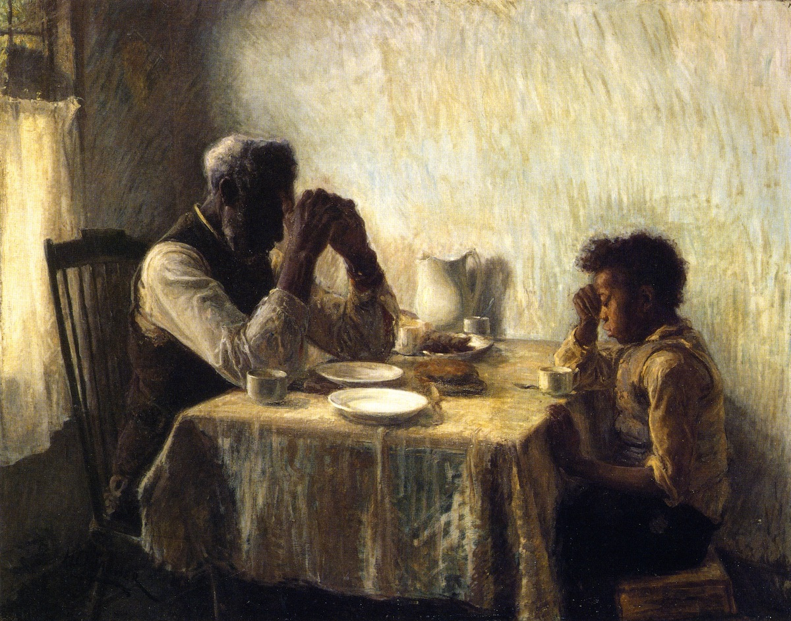

Shore of Ignorance
“As our island of knowledge grows, so does the shore of our ignorance.”
~ John Wheeler
Learning is a relatively permanent change in our knowledge or behavior that results from past experience. To embark on this journey, we must first understand its nature. True learning is not an act of accumulation. Memory is not about collection; it’s about connection. Your brain is a dynamic, living network, not a static database where facts are passively stored. Insight is the goal of all deep thinking. Insight doesn’t come from hoarding PDFs, bookmarks, and notes; it emerges from the active process of linking disparate concepts to generate new ideas. This is the fundamental difference between summarizing and synthesizing. Synthesis is the creation of genuine knowledge.
We must not let our expectations pigeonhole our learning, lest we grow dull. Children are remarkable learners precisely because they approach the world as a figurative blank slate, unburdened by the rigid, preconceived notions that accumulate with age. They possess an open curiosity that allows them to absorb the world without prejudice. To reclaim this ability, we must be patient with where we are in our journey, not worrying about where we want to be. Patience is not passivity; it is persistent engagement without the poison of premature judgment. The scientist’s temperament begins here: with a posture of interested patience rather than anxious haste, of curiosity rather than certainty.
This state of open, non-judgmental presence is the very foundation of happiness. We are, by our evolutionary design, highly judgmental survival-and-replication machines, constantly ensnared in a web of endless desires, thinking “I need this” or “I need that.” Often the greatest barrier to serenity is too many desires for what we don’t possess and too few for what we do. True happiness, or what the Stoics might call tranquility, arises when nothing feels missing. In that moment, the mind quiets; it stops racing into the past to regret or into the future to plan. What remains in this stillness is not emptiness, but a profound state of fullness that children naturally inhabit. This so-called neutral state is a state of perfection, achievable simply by escaping the constant chatter of the mind and returning to direct experience. The attitude, then, is not cold detachment; it is warm clarity, a willingness to see what is there before insisting on what should be there.
When I say connection over collection, I’m arguing for architecture before inventory. A library without a catalog is chaos, but it’s also true that a catalog without books is empty. Your mind’s catalog in the forms of schemas, models, and mental maps allows incoming information to find a home. Each new fact bonds to prior knowledge, strengthening a web of meaning rather than forming a lonely island. In this way, learning becomes compounding: every node added to the network increases the value of the entire network. This is why specialists learn faster within their domain. The web they have built gives new information more places to latch.
From this angle, even forgetting becomes strategic. You are pruning weak ties to allow strong conceptual bonds to flourish. You are not a hard drive fighting for storage space; you are a gardener optimizing growth, light, and airflow. Connection requires selection. The question, therefore, is not “How much can I remember?” but “What needs to be connected for this to make sense, to be usable, to change what I can do?”
Louis Douzette, Full Moon in Winter, 1869. Oil on canvas.
The path to genuine knowledge is arduous. You must embrace the fact that significant learning is often, or even usually, somewhat difficult. You will experience setbacks, but these should not be viewed as failures; they are the inevitable signs of effort. Never look back unless you are planning to go that way. Striving is what builds expertise. Effortful learning physically changes your brain, forging new connections and building mental models that increase your capability. Your intellectual abilities lie, to a large degree, within your own control. Character development is difficult, but you’re stronger than it is hard. Tough times pass, but tough people persevere because when the going gets tough, the tough get going.
The primary obstacle on this path is our own mind. Our cognitive biases and fallacies are reflexive inferences which flow invalidly from ingrained premises below our ordinary level of awareness. Prejudice is an outsourced shortcut that spares us the painful effort of thinking and many mistake the mere rearrangement of their prejudices for thought. There is no expedient to which a man will not resort to avoid the real labor of thinking. We instinctively avoid the real labor of thinking because our brains evolved for quick, good-enough survival decisions, not for discerning objective, nuanced truth. Evolution is a progression of form and function, but it is not inherently purposeful; Nature is a tinkerer, not an inventor. This tinkered mind of ours is what we must work with and often work against. Biases are not moral failings; they are defaults. The outlook is a suite of counter-defaults which are practices designed to slow, check, and sometimes reverse our reflexes. Consider a few:
- Confirmation bias pushes us to seek supportive evidence; a counter-default is to deliberately search for disconfirming cases: “What would convince me I’m wrong?”
- Availability bias magnifies vivid, recent examples; a counter-default weights base rates: “How often does this happen in comparable contexts?”
- Overconfidence inflates certainty; a counter-default puts numbers on beliefs: “What probability do I assign, and how would I update it?”
- Hindsight bias smooths past uncertainty; a counter-default keeps forecast records: “What did I think then, before I knew the outcome?”
The point is not to expunge bias which would be impossible. Instead, the point is to engineer purposeful friction where our cognition most often skids. An operating system of frictions—checklists, calibration, counterexamples, prediction logs, pre-mortems—that make accuracy more likely than ease.
Thinking like a scientist isn’t about wearing a lab coat and looking through a telescope or microscope; it is an intellectual and moral discipline. It is an applied philosophy. A scientist favors humility over pride and curiosity over conviction. This is the cornerstone. It means you are more interested in what you don’t know than in defending what you think you know. It requires you to be eager to discover new things. Curiosity is not idle wonder; it is directed inquiry. It’s a habit of asking structured questions and tracing mechanisms: If X, then Y; if not Y, then perhaps not X. The truth is never embarrassed by honest inquiry. The trouble with the world is that fools and fanatics are always so certain of themselves, while wiser people are full of doubts. It’s impossible to make anything foolproof, because fools are endlessly ingenious, a corollary of Murphy’s and Sod’s Laws.
So how can leaders remain confident and inspire confidence when they see nothing as certain? How can they act decisively without falling into analysis paralysis while their thinking is complex, reflective, and self-critical? How can they pursue goals with relentless determination while staying open to the possibility that they’re wrong? At the heart of good judgment lies humility which is the recognition that reality is vastly complex, our comprehension limited, and error inevitable. For example, Thomas Edison didn’t fail 700 times; he succeeded in discovering 700 ways not to build a light bulb. Wisdom often begins with studying what not to do. The same principle applies to decision-making: you may not always know what will work, but you can often identify what definitely won’t. Avoiding disastrous choices is progress in itself.
Curiosity speaks louder than conviction. Knowledge is proud of how much it knows; wisdom is humble that it knows no more. Find the delicate balance between hunger and humility. It’s not what you don’t know that causes trouble, but it’s what you think you know that just isn’t so. Certainty can be a shackle; uncertainty, by contrast, opens space to learn and improve, guards against fanaticism, and invites dialogue.
By calibrating confidence, superforecasters practice this disciplined humility by quantifying uncertainty. They deconstruct problems into smaller parts, distinguish clearly between the known and the unknown, and leave no assumption untested. They adopt the outside view by placing the problem in context and recognizing patterns across cases. Then they shift to the inside view, appreciating its unique details. They compare their perspectives with others’, attend to differences, and draw on collective intelligence: prediction markets, group judgments, crowd wisdom. Finally, they synthesize all these perspectives into a single vision as multifaceted and precise as a dragonfly’s eye, expressing their conclusions in finely tuned probabilities rather than absolutes. The lesson is clear: confidence is not an attitude; it is a distribution. You inspire trust not by declaring absolutes, but by showing your work. Outlining your assumptions, data, ranges, and how your belief would change given new evidence. This is strong leadership: decisive and revisable.
Don’t let your ideas become your identity. When you fuse your identity with your beliefs, you perceive any challenge to those beliefs as a personal attack. This makes you defensive and intellectually stagnant. Your goal is to seek truth, not to be right. This echoes the Stoic principle that ego is the enemy. In practice: prefix beliefs with “for now;” carry them lightly; and design experiments that could gather evidence that supports or refutes beliefs. But, more importantly, actively look for reasons why you might be wrong. Most people suffer from confirmation bias, seeking only evidence that supports their existing views. The scientific thinker does the opposite, understanding that progress comes from correcting errors. An error doesn’t become a mistake until you refuse to correct it. Every error is a portal of discovery. Treat errors as data and tuition: the fee you pay to upgrade your model.
Listen to ideas that make you think hard, not just those that make you feel good. Comfort is often the enemy of growth. Surround yourself with people who can challenge your process, not just mindlessly agree with your conclusions. As Nero learned when you punish truth, expect lies to become your only company. Seek the colleague who asks, “What are we assuming here?” and the friend who says, “Let’s simulate the edge cases.” There is no shame in not knowing; the shame lies in not finding out. Some poems don’t rhyme and some stories don’t have a clear beginning, middle, and end. Life is about not knowing, having to change, taking the moment, and making the best of it, without knowing what’s going to happen next.
Uncertainty is not a weakness; it is the only certainty we have. Knowing how to live with insecurity is the only true security. Those great thinkers before us are not our masters, but our guides. Truth lies open to all, and there remains plenty still for posterity to uncover; it has not yet been monopolized by any one mind. Embrace uncertainty as bandwidth or the room in your mind for new signals. If you are a full teacup, there will be no available bandwidth. Calibrate it with probabilistic language (“I’m 60–70% confident”), not as diffidence but as a promise to update.
Make theory practical with If-Then statements. Theory takes time, and the hallmark of good theory is that it dispenses its advice in if-then statements. If friction increases, then heat rises. If incentives are misaligned, then behavior will drift. Framing your beliefs in conditional form keeps them testable and your thinking revisable. All advice can only be a product of the man who gives it.
Avoid popular thinking and adopt first-principles thinking. Much of popular thinking rests on little more than a collection of anecdotes and the plural of anecdote is not data. Stop riding coattails. In order to get your own jump, you have to know the fundamentals, basics, pieces, rules, etc. Once you understand the landscape of the game, then you can navigate on your own. Proof is not a synonym for truth. Too many people are running their own one-person clinical trials for proof instead of learning from the the truth in rigorous, gold-standard randomized, double-blind, placebo-controlled trials. When you get lost in a maze of analogies, revert to fundamentals: definitions, conservation laws, constraints, mechanisms. Ask: “What must be true for this to work at all?” “What cannot be true because it breaks something deeper?” Then rebuild upward with minimal assumptions. Systematically doubt everything possible until you’re left with purely indubitable truths. First principles are that which cannot be deduced any further. First-principles reasoning continues where doubt leaves off: it asks, “What remains when we strip away analogy and fashion?” What are the minimal truths—definitions, conservation laws, functional constraints? Become part of the problem to find the truth in resolving that problem. The best solution is usually not where everyone is already looking. Stick to what is timeless and true, not what is trending. Fundamentals will endure, popularity will not.
Seek the middle way through life. Resilience is the art of returning to your natural rhythm. Harmony comes not from eliminating change, but from tempering our deviations so they never become extremes. Noö-dynamics, Viktor Frankl’s term, describes the living tension between what we have achieved and what we still strive toward. Vibrations are movements in time—oscillations that return to equilibrium. Waves are movements through both space and time—they cannot remain in one place, so they must travel onward.


From possibility to presence — potential becomes real through observation.
This image represents how the Copenhagen interpretation views quantum systems where the rotating vectors depict probability amplitudes evolving smoothly as waves until measurement collapses them into concrete outcomes. Each sine wave projection illustrates how observation extracts a single component from a superposition, turning potentiality into actuality. Thus, measurement is both the limiter and the creator of reality’s boundaries. There is no equal and opposite reaction, only the collapse of correlated probabilities into one outcome. The correlations we observe are not causative forces but statistical relationships that describe what can be known. In this sense, there are no active or passive forces causing regression: only the limits of observation shaping how certainty collapses into form, and how knowledge itself becomes the act that defines existence.
These abstractions visualize Nature’s inherent circularity. An unbroken rhythm through which energy, matter, and awareness perpetually return to themselves. This ceaseless motion reflects the ancient principle of saṃsāra. The wheel of becoming through wandering, world, and rebirth where every form arises, dissolves, and reconstitutes. The central black line symbolizes Nature’s equilibrium: the mean to which all things regress unless acted upon by a transformative force. Sometimes we rise above the mean; sometimes we fall below it. Identity and insight are refined through this oscillation. The image does not merely show cycles. It mirrors our own nature. Deviation from equilibrium is not failure but discovery, for you cannot find your true nature without first straying from it. Over time, patterns emerge. With enough data, the mean, the underlying truth, reveals itself. Consider how variables interplay with the others: a dynamic regression toward balance, yet always alive with deviation, movement, and return. You may think this suggests we are adrift in chaos since entropy forever shadows order. But wherever disorder grows, order also hides within it. Good and evil, order and chaos—they are cyclical, bound in mutual creation. The simpler something is, the less vulnerable it is to disorder.
In its essence, religion is humanity’s effort to bridge the finite and the infinite—to unite the earthly soul with the otherworldly divine. Beneath its many forms and doctrines lies a single universal aim: the realization of God within. Ideals and methods may vary, but all traditions converge on this truth—that God, the ground of being, can be directly known, intimately encountered, and experienced with a fullness beyond mere thought. This is an intimately ephemeral encounter that must be directly experienced with a fullness surpassing mere conceptual comprehension.

The pursuit of knowledge is a deeply humbling paradox. Confidence tends to arise more often from ignorance than from genuine knowledge. This is the essence of the Dunning–Kruger effect, a cognitive bias where people with low ability at a task overestimate their ability, while experts tend to be more aware of their limitations. You can gauge a person’s ignorance by how many different phenomena they explain with the same answer. They recycle explanations or ideas because their demand for answers outstrips their supply. Few things dull the mind more than the belief that you must have an opinion on everything. Most people don’t truly hold opinions. They improvise them when prompted, stitching together half-remembered notions and social cues, then the ego defends this haphazard construct as if it were sacred truth. The remedy for make improvised opinions is restraint and discarding your reflexive answers. Learn to pause before reacting and say, “I don’t have enough information yet.” That single sentence is the beginning of wisdom. Most debates aren’t about logic at all. They’re emotional and identity-driven subconscious attempts to defend belonging to some ingroup rather than to uncover truth.
Personally, I’ve been exploring the concept of consciousness for quite a while now. The more I read about consciousness, the further I drift from understanding it. Each insight only widens the horizon of what I don’t know. It’s a funny contradiction, but It’s also quite traumatizing to think you know something and come to realize you were awfully incorrect in your judgment about it. As a child, you knew everything; but now as an adult, you know nothing. Education is a progressive discovery of our own ignorance. But, hey, how can you be rendered culpable to know what you don’t know? It’s a paradox in itself: we don’t know what we don’t know. Oftentimes, we can find ourselves overly confident in our limited competency as demonstrated by the Dunning-Kruger effect:

Don’t confuse confidence for competence.
Ignorance more frequently begets confidence than does knowledge. The more you know, the more you know you don’t know. In other words, the less you know, the less you know how little you know. The quicker you are to recognize when you’re wrong, the less wrong you become. Even worse are the red herrings that completely delude our path of thinking. In our current social milieu, we have experienced the nefarious ‘whataboutisms’ that divert attention from one injustice to another tangential injustice. Don’t focus on how far you’ve come. Focus on how far you have left to go.

In our pursuit of knowledge, theoretical physicist John Wheeler said, “As our island of knowledge grows, so does the shore of our ignorance.” Every answer uncovers new, more sophisticated questions. Consider the impact that Isaac Newton had on the world by simply asking the question, “Does the moon also fall?” That single question bridged the heavens and the earth, revealing that the same force governing an apple’s fall also governs the motion of the moon. In doing so, Newton unified celestial and terrestrial physics under one elegant law of gravitation. His curiosity transformed wonder into understanding and forever changed how humanity saw its place in the cosmos. It’s a reminder that profound revolutions often begin not with certainty, but with a well-posed question.
The more you map, the more unmapped territory you expose. This can feel daunting, like the perpetually thwarted Tantalus in Greek mythology, forever grasping for the fruits of true knowledge that recede from his touch. But seen rightly, it is exhilarating. The expanding shoreline is not a failure of mastery; it is the index of progress. The alternative being an island never growing has a trivially short shoreline and a tragically small interior. In our modern age, this paradox is amplified by what can only be called intellectual obesity.
We are drowning in information, but starved for knowledge.
Gorging on junk info bloats the mind. It fills the mind with a cacophony of half-remembered gibberish that sidetracks your attention and confuses your senses. We become concerned by trivialities and outraged by fiction, developing an atherosclerosis of the mind. When attention is fragmented, connection cannot occur. Without connection, memory does not consolidate. Without memory, wisdom cannot form.
- Information is raw data: disconnected facts, signals, and observations.
- Knowledge arises when information is organized and understood; it reflects comprehension and the ability to make sense of patterns.
- Wisdom goes a step further from knowledge. It is the discerning use of knowledge, guided by judgment, ethics, and experience.
In essence, information is input, knowledge is understanding, and wisdom is application with insight. The antidote in our lives is not more information, but wisdom. To gain knowledge, we accumulate. We add facts, ideas, and techniques. To gain wisdom, we let go of excess, of certainty, and of self. The path to wisdom is subtraction:
To attain knowledge, add things every day.
To attain wisdom, subtract things every day.
When nothing is done, nothing is left undone.
In the practice of the Tao, every day something is dropped. Subtract what? Subtract fauxductivity and meta-work. I’m talking to the perfectionists who read about writing instead of writing, watch tutorials instead of building, optimize their notes instead of using them. This keeps us out of the action that propels us into progress and a common limiting belief that many of us face is that we don’t know enough to take action. You can learn more in one hour of doing than 10 hours of listening. While seeking more background and pursuing lifelong learning can be valuable, this behavior is often a disguised response to our fear of failure. Subtract the compulsion to “keep up” with everything. The right question is not, “Is this useful?” but, “How will I use this?” If you cannot answer, set it aside. Do fewer inputs; do more with the inputs you keep.
Less and less do you need to force things, until finally you arrive at non-action or wu-wei. True mastery can be gained by letting things go their own way. It cannot be gained by interfering. Given this view, it is okay to step back from learning. We are learning exponentially more knowledge faster than we can digest for nourishment. Growth for the sake of growth is the ideology of the cancer cell. In an age of information overabundance, our curiosity, which once focused us, now distracts us. And it’s caused an epidemic of intellectual obesity that’s clogging up our minds. Consider informational fasting for a week as a means of mental decompression. Will doing something like disconnecting from technology really matter? After all, how many times have you actually missed out on something? Yet even if we haven’t missed much, something else has been lost—our ability to focus.
Our attention span has gone through the floor because we’re hit with so much information all the time. We want to skip, summarize, and cut to the chase. Eventually, the addiction to useless info leads to intellectual obesity. Unable to distinguish between relevant and irrelevant, you become concerned by trivialities and outraged by fiction. These concerns and outrages push you to consume even more, and all the time that you’re consuming, you’re prevented from doing anything else: learning, focusing, even thinking. The result is that your stream of consciousness becomes clogged and constipated. Pigs get fat, hogs get slaughtered. Regarding the just-in-case knowledge collection consumption phenomenon: unfollow the industry blogs, stop reading the newspaper, don’t go on site aggregators, halt the RSS feed, quit it. It’s all fauxductivity and wasting your time with useless information that will only cause analysis paralysis, self-doubt, and decreased confidence in your existing decisions. If the news is so important to you, then wait until a carefully thought out book is written about it later. In general, people don’t want to subscribe to the news anymore. The issue isn’t only that people expect free news, but that choosing from the sheer number of sources demanding subscriptions has become overwhelming.
We are overconsuming novelty and underconsuming purpose.
Most people consume information for social approval, not understanding. They read countless commentaries on evolution but never Charles Darwin. They read countless economics papers but never Adam Smith. It’s about fitting in with the herd, not thinking independently. Real returns in life come from stepping outside the herd. It comes from creating boundaries that guard your focus and integrity. Ask yourself: “Does this action serve long-term learning or just comfort?” When you stay aligned with your values 100% of the time, you don’t have to negotiate them. The key is consistent alignment, not constant compromise.
A practice for subtraction is informational fasting. For a defined window, pause news feeds and novelty streams. Replace them with action: implement one idea you already collected. The fastest way to differentiate the essential from the optional is to do something that fails without the essential and succeeds with it. Action is the strongest filter. It’s better to understand how to take action and solve a problem than to simply memorize a solution. It’s better to try and fail than to never attempt at all. Your authentic self isn’t about fixing every weakness, but it’s about amplifying your strengths so your weaknesses matter less. Authenticity, rightly understood, is strategic differentiation rooted in honest preference. It is the discipline of saying no to alluring prestige bait and yes to work whose costs you’ll happily pay for years. The way out of the competition trap isn’t to memorize more of what everyone else already knows. The way out is to assemble a unique constellation of skills and perspectives with which to make new connections, so that both the problem you solve and the way you solve it become unmistakably your own. That’s authenticity: discovering what you can do better than anyone else because you genuinely love it. Don’t aim to be the best—aim to be the only. When you do what you love with authenticity, you create something no one can replicate. Thus, learn how to connect that passion to what the world actually needs. Apply leverage, put your name on it, and take ownership. The risks are yours, but so are the rewards. Stop trying to perfect what you’re not, and instead double down on what you are. Spontaneity is the courage to work without a net, and that’s where the real magic happens.

Jan Steen, Cleopatra’s banquet, ca. 1673–1675. Oil on canvas.
Attention gives birth to memory; memory matures into knowledge; and knowledge ripens into wisdom as it is tested by time. We become what we notice. The patterns we attend to take root in memory and from those roots our wisdom grows. The beauty of memory lies in its selectiveness. It is unpredictable and partial, preserving not the grand moments we expect, but the fleeting, ordinary ones that life itself forgets. There are moments when forgetting is a virtue, for the act of remembering can itself become a burden. Themistocles, an Athenian statesman and general, understood this. When a sage offered to teach him the art of memory, he replied that it would be a far greater kindness to be taught how to forget.
Attention is more valuable than time, because time moves with or without us, but only attention makes it real. To attend is to live; to be distracted is to drift through borrowed hours. When we scatter our attention, we surrender the human ability to inhabit the moment rather than merely endure it. When attention fades, life itself withdraws; the body may go on breathing, but the living has already ceased.
Information → Attention → Memory → Knowledge → Wisdom

f(x) = 0.01x², 0 ≤ x ≤ ∞
Knowledge compounds. The more you learn, the faster you are able to learn. It illustrates this concept in three stages:
- The Beginning (The Small Red Circle): In the early stages, progress is slow and difficult. The curve is nearly flat, representing the initial friction of building a foundational understanding.
- The Turning Points (The Orange, Green, and Blue Circles): As you acquire a base of knowledge, you begin to make connections. Learning accelerates, like interest compounding in an account. The curve gets steeper.
- Mastery (The Large Purple Circle): With a deep understanding, you can absorb and connect new information rapidly. The curve is at its steepest, showing that each new unit of time yields a much larger return in knowledge.
In short, it’s a visual argument that the initial struggle of learning is an investment that pays accelerating dividends over time.
- Attention is selective resource allocation. You cannot attend to everything. If you try attending to everything, you attend to nothing. Design attention, don’t merely demand it. Schedule focused, device-free blocks on your calendar; create clear prompts; and work in environments that minimize noise.
- Memory is the residue of thinking. Rehearsal without retrieval is weak. Build habitual retrieval into your days through using flashcards, Feynman teaching, or journal recaps. Tag facts to explanations and stories. Recall is easier when a fact lives inside a narrative. When you connect ideas across contexts, you build the cross-links that convert a warehouse into a network.
- Wisdom emerges when memories are organized by principles and tempered by experience. Every man is the sum total of his reactions to experience. You know you are moving toward wisdom when your explanations get simpler without getting simplistic. When your generalizations aid clarity but do not distort truth. When your predictions get calibrated. When your plans admit uncertainty without conceding agency. This moves you from collection to connection, from opinion to forecast, from passivity to inquiry.

Isaak Levitan, Over Eternal Peace, 1894. Oil on canvas.
Our ability to think clearly and act with wisdom depends entirely on our ability to perceive reality accurately. This requires silence. Not the mere absence of sound, but the quieting of incessant internal and external noise so we can perceive what is actually there. We often use familiar music or other distractions to avoid the discomfort of the unknown. Looking at it a different way, music is in the silence between the notes. To learn, we must penetrate the unfamiliar horizon.
This is the foundation of meditation: to be still and allow the senses to be naturally indulged by the environmental presence that surrounds you. As the composer John Cage discovered with his piece 4′33″, true silence is impossible. I initially thought of this piece as an elitist profiteering scheme since this composer is capitalizing from playing nothing. After thinking about it some more, I’m still convinced it is an elitist profiteering scheme. However, what fascinates me most is the philosophical insight behind the composition: that true silence does not exist, and in that realization, Cage found comfort in the assurance that music would always endure. Similarly, there is never absolute zero and infinity is not a number; these are all only theoretical concepts. As you minimize noise, you become aware of previously unperceived waves and vibrations like air conditioning that was always humming, a ticking clock you had ignored, the faint mental chatter in your head labeling everything it sees. In the same manner, intellectual silence reveals assumptions you never noticed, frames you unconsciously applied, labels you took as real. We have yet to develop the awareness for the many vibrations that the present moment offers.
Consider Revolution 9… I don’t know what to say except that it is “music” muddled with sound. I included it because it feels like the inverse of John Cage’s 4′33″. Cage teaches us to listen to silence; Revolution 9 drowns us in the impossibility of it. One opens space for awareness, the other collapses under sensory overload. Both pieces reveal how fragile the boundary between noise and meaning truly is.
Perception is not a clear window onto reality but a colored lens. The eye sees only what the mind is prepared to comprehend. Eyes and ears are bad witnesses to men having rude souls. Our internal disposition, our character, shapes how we interpret the world. A man does not see the world as it truly is, but as his heart is. The heart writes the script, and the world performs it, each day unfolding as a reflection of his inner state. One who carries bitterness will find cruelty everywhere, while one who carries love discovers beauty even in hardship. What dwells within colors his vision, shaping reality into a self-fulfilling prophecy. To change the play, he must first change the author within. In this way, the heart itself becomes prophecy—for what it expects, it inevitably finds. The heart does not merely witness the world. The heart creates the world in which it beats.
The way people judge the world reveals the nature of their very own character.
This is why self-cultivation is the highest duty; to change the world, you must first change the author within. Your feelings don’t care about facts, and facts don’t care about your feelings. We must, therefore, be vigilant about the vibrations we choose to tune into. Two disciplines help here:
- Label the lens. Before analyzing an issue, write: “Frame A: efficiency; Frame B: fairness; Frame C: robustness.” Notice how conclusions change as the frame changes? The lens is not neutral; naming it reduces its power to mislead.
- Steelman before you strike. Articulate the strongest version of the opposing view, with premises and inferences, before you critique it. This forces you to perceive the best case, not the strawman. It also quiets ego; you can’t caricature an argument you just improved.
Silence also sharpens discernment. Just as minimizing audible noise reveals previously unheard tones, minimizing cognitive noise reveals subtle distinctions like between correlation and causation, signal and artifact, policy and outcome. The mind is patient enough to wait for these distinctions to appear and disciplined enough to act only when they do. Spirituality, religion, or really any true path of self-realization, teaches over time that you are more than your mind, more than your habits, and more than your preferences. You are awareness itself, expressed through the body. Yet modern humans live largely detached from both. We spend too little time in our bodies and too little in our awareness. Instead, we dwell mostly within the ceaseless monologue of thought. That monologue is shaped by the voices of self and others, programmed by society, and molded by early environment.

Martinus Rørbye, View from the Artist’s Window, 1825. Oil on canvas.
Humility has profound ethical implications. It is the bridge from automatic judgment to considered compassion. A disciplined mind does not deal in crude labels. There are no “evil people,” just as there are no “smart people” or “stupid people.” There are people who do evil things, people who do smart things, and people who do stupid things. Labeling someone is a lazy shortcut; it is jumping to a conclusion, which is the end of thinking. Labels compress complexity so we can act quickly; compassion decompresses it so we can act wisely.
Before you judge and jump to conclusions, remember the story of Jean Valjean in Les Misérables, condemned as a criminal for stealing a single loaf of bread to feed his starving family.
In the winter of 1795, when resources were scarce, Jean Valjean stole a loaf of bread from a local baker by breaking the window. He was caught and imprisoned for five years in the Bagne of Toulon, the Toulon prison… Jean Valjean, after spending nineteen years in jail and in the galleys for stealing a loaf of bread to feed his starving family (and for several attempts to escape) is finally released, but his past keeps haunting him. At Digne, he is repeatedly refused shelter for the night.
Although Valjean was freed 19 years later, his release was not true deliverance; he escaped the galleys but not his judgment, for every act carries its own transaction. The day he stole was the day he became a thief—regardless of his reasons. As Epictetus asked, “Until you know their reasons, how do you know whether they acted wrongly?”
I want to talk a bit more about karma since it is often misinterpreted as cause and effect. We have this Western conception of karma where the wrongdoer will be punished for their wrongdoing by some moral cosmic force that imposes spiritual repercussions. The Western notion of karma likely arose under the influence of Newtonian physics, with its linear view of cause and effect, imagining it as a kind of moral physics. Yet this interpretation is misleading: in its original context, karma was never mechanical causality. It spoke to intention, consciousness, and the subtle moral and spiritual momentum of one’s actions through time. It is a fallacy that there is some purposeful force directing misery upon the wrongdoer—this is not actually karma according to the Eastern philosophies that delineate karma. Instead, according to Eastern conceptions, karma is more so a transaction. A circle so to speak. We are all connected. The very essence of a transaction is that there is nothing that goes unaccounted. There is this continual connection that stitches together the very fabric of our universe. Nothing comes free of charge. Western thought has incorrectly described karma as being a principle of cause and effect. Karma is not cause and effect. Karma is perennial. Karma is a component of saṃsāra.
This is where we must understand karma not as a cosmic system of reward and punishment, but as a transaction within an interconnected whole. Every action is part of a perennial cycle that stitches together the fabric of the universe. Richard McGuire said that “everything we do has consequences—even the smallest and seemingly most insignificant thing.” His children’s book, What Goes Around Comes Around, captures this idea of karma. We overlook the consequences because there are innumerable consequences that we fail to fathom. We can never control outcomes. We can only influence outcomes. Let it be that such is the case since Nature has already decided it to be. Remember the Three Fates: Clotho selects material and spins it into thread. Lachesis measures the thread. Atropos cuts the thread. We cannot change the cards we are dealt, just how we play the hand.
When someone wrongs you, you are not a victim of a targeted cosmic force, but a participant in a transaction. The real question is how you react. Do you perpetuate the negative vibrations by amplifying the trough of the wave? Or do you respond with good vibrations by damping the oscillation and returning toward the crest? The greatest revenge, the Stoics teach, is to not be like your enemy. If imitation is the sincerest form of flattery, then differentiation is the sincerest form of insult. You can decide to react with compassion and dignity in bringing awareness to their mistake. After all, nobody in their natural right has the power to hurt you—the opinion that they are hurting you is hurting you. Master the gift of goodbye. You don’t owe loyalty to a friend, partner, or employer who belittles you. Successful and happy people simply say goodbye. We should react to others’ wrongdoings with appreciation and gratitude for the wisdom they impart, not with bitter resentment. We choose to develop that bitter resentment. Compassion is acting in the present moment—ignorant of past and future—with an open heart. Compassion is proportional to the actual human contact.
However, compassion is not permissiveness. Although our impressions and judgments are prone to misinterpretation, don’t be so clement that you tolerate injustice and don’t be so reactionary that you overrule reasonable norms. Reprimand without giving way to abuse; praise without giving way to flattery. Compassion holds two truths at once: human action is entangled with circumstance and persons are responsible for their choices. This dual recognition of context and responsibility prevents both naïveté and cynicism. It keeps you inside the domain where change is possible.

Henry Ossawa Tanner, The Thankful Poor, 1894. Oil on canvas.
We often collect tactics like tips, tricks, and hacks because they promise immediate leverage. But tactics without a grounding strategy are like decorating a house built on sand. When conditions change, the decorations do nothing to prevent collapse. Strategy is knowing what to do when there is nothing to do; it is the theory that determines which tactics even qualify as options. The first step of strategy is problem identification. Identifying the issue is the rock of the strategy; not identifying the issue is the sand of the strategy. In causal terms, precisely name the friction. Next, accept that Nature is the ultimate judge, jury, and executioner. What’s happened has happened. You can argue with reality or you can model it. Accepting it is faith in the world’s order, not surrender to it. Strategy aligns your actions with the laws and regularities that do not care about your preferences. Tactics exploit a position; strategy creates the positions that tactics can exploit.
More mistakes are made by doing nothing than by taking a wrong step. An ant on the move does more than a dozing ox. Harmony is not a static equilibrium but a dynamic one like a bicycle that stays upright only while in motion. In physics, inertia resists changes in motion; momentum carries a system through small perturbations. The rhythm of attention, habits, and reflection are examples of intellectual momentum that carry you through distractions and discouragement. Momentum has two components: direction and magnitude. Direction is your strategy—the vector of your inquiry. Magnitude is your cadence—how often you act on your strategy. If you have magnitude without direction, you are busy, mistaking movement for progress. If you have direction without magnitude, you are stalled. Harmony arises when direction and magnitude align with your constraints and values.
Entropy always lurks. Left alone, systems drift toward randomness. Learning, like life, is a locally entropic battle: we spend energy to carve order (understanding) from the flow of experience. This is why taking breaks is ambiguous. Yes, we need recovery; no, we cannot let dissipative forces erase the structure we just created. The solution is cadence: sustainable cycles of focused effort and genuine rest, repeated. Keep the wave oscillating around your chosen mean. Too long at the crest (overreach) invites collapse; too long at the trough (apathy) cements inertia. The middle way is motion with moderation; it is independent of yourself. Return to it, lock into it. Spend more time with people who give you energy and less time with people who steal your energy. Momentum is the antidote to fragility. Small, repeatable actions are shock absorbents. When life throws a wobble, a rhythm of tiny forward moves prevents the wobble from becoming a rollover.